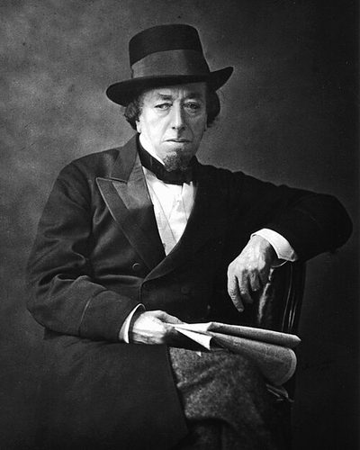

Ideologies / Conservative
What is One Nation Conservatism?
One Nation Conservatism is a political ideology in the Conservative family. Disraeli's novel describes an England split into two nations, the rich and the poor, who know nothing of each other's lives. It blames a selfish oligarchy and the new factory system for abandoning the labouring people. The remedy is not levelling but duty: Crown, Church and a responsible aristocracy should renew their old bond with the people and improve their condition, so that inherited institutions and social reform support each other.
The rich and the poor must not become two nations.
Defined from: Benjamin Disraeli, Sybil, or The Two Nations (1845)
See how close you are to One Nation Conservatism Dare a friend to answer as one

.jpg){kind=link}
Where One Nation Conservatism stands on 13 axes
Each axis runs from 0 to 100. A score of 50 is the middle. On a classic compass it sits in the Libertarian Right quadrant.
| Axis | Position | Score | In words |
|---|---|---|---|
| EconomyMarket to Planned | 45 | Balanced | |
| OwnershipPrivate to Collective | 20 | Strongly Private | |
| RightsLiberty to Security | 50 | Balanced | |
| GovernmentDemocracy to Autocracy | 45 | Balanced | |
| StructureDecentralised to Centralised | 55 | Balanced | |
| NationInternationalist to Nationalist | 75 | Strongly Nationalist | |
| ImmigrationMulticulturalist to Assimilationist | 65 | Leans Assimilationist | |
| ValuesProgressive to Traditional | 80 | Strongly Traditional | |
| TechnologyAccelerationist to Precautionary | 45 | Balanced | |
| EnvironmentIndustrialist to Environmentalist | 40 | Leans Industrialist | |
| ReligionSecular to Religious | 65 | Leans Religious | |
| MilitaryPacifist to Militarist | 60 | Leans Militarist | |
| TradeFree Trade to Protectionist | 55 | Balanced |
Ideologies closest to One Nation Conservatism
- Straussianism89% alike
- Hegelian Constitutional Monarchism87% alike
- Aristotelian Polity86% alike
- National Conservatism85% alike
- Romantic Nationalism85% alike
Its opposite on this map is Fully Automated Luxury Communism, at 36%.
Parties near One Nation Conservatism
- Tory PartyUnited Kingdom. The Tamworth Manifesto (1834)90% alike
- Brothers of ItalyItaly. Pronti a risollevare l'Italia (2022)89% alike
- Perikatan NasionalMalaysia. Prihatin, Bersih, Stabil (2022)89% alike
- Democratic Unionist PartyUnited Kingdom. Speaking Up for Northern Ireland (2024)88% alike
Common questions
What is One Nation Conservatism?
One Nation Conservatism is a political ideology in the Conservative family. Disraeli's novel describes an England split into two nations, the rich and the poor, who know nothing of each other's lives. It blames a selfish oligarchy and the new factory system for abandoning the labouring people. The remedy is not levelling but duty: Crown, Church and a responsible aristocracy should renew their old bond with the people and improve their condition, so that inherited institutions and social reform support each other.
What does One Nation Conservatism believe?
In one line: The rich and the poor must not become two nations. Its strongest positions are Private, Traditional, Nationalist. Disraeli's novel describes an England split into two nations, the rich and the poor, who know nothing of each other's lives. It blames a selfish oligarchy and the new factory system for abandoning the labouring people. The remedy is not levelling but duty: Crown, Church and a responsible aristocracy should renew their old bond with the people and improve their condition, so that inherited institutions and social reform support each other.
Who founded One Nation Conservatism?
One Nation Conservatism is defined here from Sybil, or The Two Nations (1845) by Benjamin Disraeli. The thinker most tied to it is Benjamin Disraeli (1804 to 1881).
Is One Nation Conservatism left wing or right wing?
On a classic two axis compass One Nation Conservatism falls in the Libertarian Right quadrant, which means the economic right and the middle between libertarian and authoritarian. Left and right hide a lot, though, which is why EthosScales scores it on thirteen separate axes.
How is One Nation Conservatism different from Straussianism?
They are close: 89% alike. The biggest gaps are on Nation, where One Nation Conservatism scores 75 and Straussianism scores 55, and Technology, where One Nation Conservatism scores 45 and Straussianism scores 60. On each axis, 0 is one end and 100 is the other.
Think this is wrong? Suggest a correction. The scores are editorial estimates.